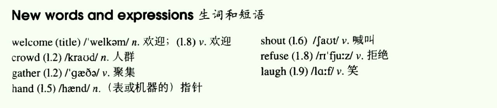
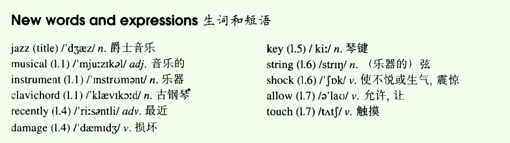
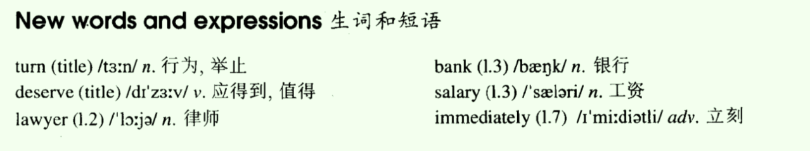
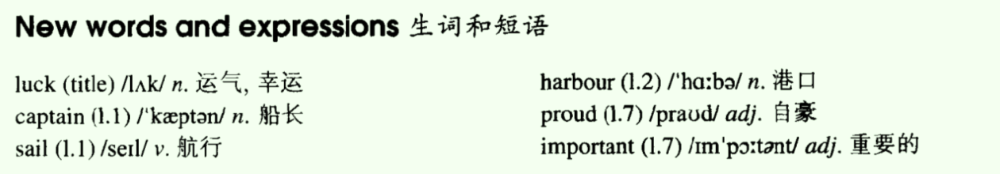
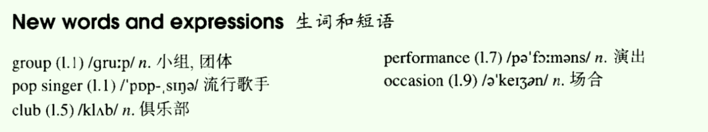
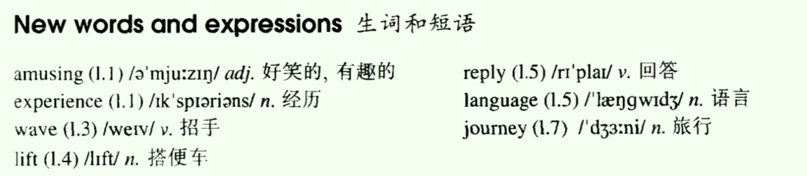
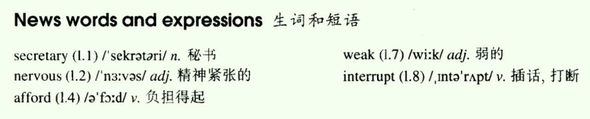
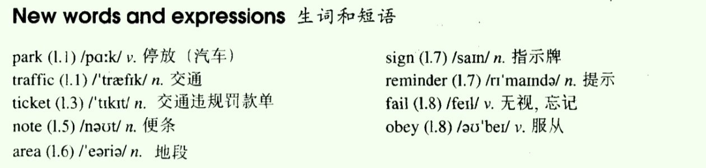

- Lesson 09 A cold welcome
- Lesson 10 Not for jazz
- Lesson 11 One good turn deserves another
- Lesson 12 Goodbye and good luck
- Lesson 13 The Greenwood Boys
- Lesson 14 Do you speak English
- Lesson 15 Good news
- Lesson 16 A polite request
Lesson 09 A cold welcome
一、单词讲解
1、welcome
- n.欢迎 a cold/warm welcome
- v.欢迎 welcome you/the New Year、Welcome to Beijing.
- adj.受欢迎的 You are welcome.（你是受欢迎的；不用谢）
2、crowd：n.人群
- a large crowd of people
- crowded：adj.拥挤的
3、hand：n.（表或机器的）指针
- v.传递 hand sth. to sb.
4、refuse
- refuse sb./sth.
- refuse to do sth.
All

二、课文&语法讲解
1、本文重点
- 表示时间的介词短语
- 复习时态L7（过去完成时、一般过去时、过去将来时）
2、课文
- What does 'a cold welcome' refer to?
- On Wednesday evening, we went to the Town Hall.
- On Wednesday evening 和具体的天有关系的，使用on；
- in the evening
- It was the last day of the year and a large crowd of people had gathered under the Town Hall clock. 过去完成时
- It would strike twelve in twenty minutes' time.
- in + 时间，若和将来时连用，通常表示多长时间之后；
- twenty minutes' time：二十分钟的时间
- 名词所有格（名词与名词间建立所拥有的关系，“...的”，不都是表示“人的”）
- a teacher's books
- teachers' books 以s结尾的直接加'，不用再加s了
- ten years' time：十年的时间
- Fifteen minutes passed and then, at five to twelve, the clock stopped.
- The big minute hand did not move.
- hour hand
- second hand：秒针、二手的
- We waited and waited, but nothing happened.
- sth. happen to sb.
- Suddenly someone shouted, 'It's two minutes past twelve! The clock has stopped!'
- I looked at my watch.
- look vi.不及物动词
- 不及物动词不能加宾语，若非要加，需要在中间插入一个中介、媒介（介词prep.）；及物动词直可以接加宾语
- 中文的动词没有分类，所以就没有介词了；
- It was true.
- true：adj.真实的；
- truth：n.事实、真相；
- false：adj.不真实的、错误的
- The big clock refused to welcome the New Year.
- refuse to do sth.
- At the moment, everybody began to laugh and sing.
- begin、began、begun
- begin to do sth. = begin doing sth.
3、介词
- 用法：接名词、名词性的（代词（使用宾格）、动名词）；
- 介词和后面的名词，构成介宾结构，后面的名词做宾语
- 代词用宾格
- 介词后面加宾语从句
- in、on、at、by、with、without、from、of等
表时间的介词(prep.)
- before/after
- from ... to ...
- since/until
- during
- at 8 o'clock/night（夜晚、晚上）/midnight（午夜、半夜12点钟）/noon（中午、正午） 接时间点、类似时间点
- on Monday/April 4th 接天
- in 1992/January/summer in表示在...里面，通常接比较大的范围
- in the morning/afternoon/evening（晚上、傍晚） 上、下、晚，也是范围，也使用in
good evening：晚上好；good night：晚安；
On Sundays we don't have to go to work.
We will be there at 8:30.
Her birthday is on November 7th.
He was born in 1990.
三、知识扩展
- 1、表示时间的介词（prep.)
- At one time, train were the only practical way to cross the vast areas of the west.
- Engaging in leisure-time activities with others helps us to meet our social needs while at the same time distracting（转移...注意力）us from our worries and troubles.
- Erosion（侵蚀）of white cliffs along the south coast of England has always been a problem but it has become more serious in recent years.
- But that doesn't have to be the outcome. Water shortages do not have to trouble the world--if we start valuing water more than we have in the past.
- On New Year's Eve, New York City....
- finish the job on time
- so long as：只要...
- on time：准时（踩着点）
- in time：准时（之前，提前）
Lesson 10 Not for jazz
一、单词讲解
- 1、jazz：n.爵士音乐；
- 2、musical：adj.音乐的、悦耳的、精通音乐的；
- 3、instrument：n.乐器、仪器
- 4、clavichord：n.古钢琴；
- piano：现代钢琴；
- 5、recently：adv.最近；
- 中文中，最近都指现在时；
- 英语中，最近都指过去时；
- 6、damage：v.损坏（可以修复）
- destroy：猛烈地不可以修复的损坏
- ruin：缓慢地不可以修复的损坏
- spoil：精神上的损坏；宠坏
- 7、key：n.琴键、关键；钥匙
- key structure/point
- 8、string：n（乐器的）弦
- 9、shock：v.使不悦或生气、吃惊震惊（不高兴的）；n、吃惊震惊
- surprise：v.吃惊震惊（高兴的、不高兴的）；n、吃惊震惊
- 10、allow：v.允许、让；
11、touch：v.触摸；
All

二、课文&语法讲解
1、本文重点
- 被动语态（be + done）
2、被动语态
- 概述
- 语态分两种：主动语态、被动语态；
- 被动语态特别符合英语式的逻辑思维；中、英文的侧重点不同：中文以人为主体，“我认为...”，“谁谁说...”；人不客观；英文以事为主体，“...被认为”；
- 狗吃了那个蛋糕。
- The dog ate the cake.
- ?吃了那个蛋糕
- 想写出主动的句子，需要先知道动作的发出者；写不出主动的句子，只能写被动的句子；
- 蛋糕被吃了；
- 应用范围
- 狗吃了那个蛋糕
- 蛋糕被狗吃了；
- 首先这个动词后面必须有宾语，及物动词；
- 加了介词的不及物动词也可以，单独的不及物动词不行；
- 公式
- be + done
- done：被动的 动作 ；
- be：被动的 时间 ；be要变成对应的各种时态、要体现主语的单复数；
- 教室每天都打扫。
- Classrooms are cleaned (clean) every day.
- A new building was built (build) last year.
- be + done
- 和时态相结合
- 他 每天 被打。 He is beaten every day.
- 他 昨天 被打了。He was beaten yesterday.
- 他 明天将要 被打。He will be beaten tomorrow.
- 他 现在正在 被打。He is being beaten.
- 现在进行时的被动：am/is/are + being + done.
- The news is being broadcasted.
- 补充
- 被动语态也可以带上动作的发出者：...+ by + 动作的发出者；
- 例句
- English is spoken (speak) all over the world.
- The stadium was built (build) in 1998.
- Rome was not built in a day.
- People are being influenced by advertisements.
- 概述
3、课文
- What happened to the clavichord?
- We have an old musical instrument.
- It is called a clavichord.
- It was made in Germany in 1681.
- Our clavichord is kept in the living room. 被保存在客厅里
- It has belonged to our family for a long time.
- sth. belong to sb.
- The instrument was bought by my grandfather many years ago.
- Recently it was damaged by a visitor.
- She tried to play jazz on it!
- She struck the keys too hard and two of the strings were broken.
- strike、struck、struck
- break、broke、broken
- 英语中，有好多形容词其实来自动词的变化（被动语态），比如broken；
- My father was shocked. shocked也可以当形容词
- 那到底是当作动词，还是形容词？不重要，因为意思都是一样的；
- Now we are not allowed to touch it.
- It is being repaired by a friend of my father's.
- a friend of my father's：双重所有格（不重要）
- a friend of my father's (friends)
- my father's a friend：错误，名词前面的限定词只能有一个；
- 名词所有格：
- Lily's book
- the door of the room
- A's B、B of A的区别：词序
- a friend of my father's：双重所有格（不重要）
三、知识扩展
- 1、被动语态：be + done
- The teacher helps me.
- I am helped by the teacher.
- The teacher helps Jane.
- Jane is helped by the teacher.
- The teacher helps us.
- We are helped by the teacher.
- A college student bought my old car.
- My old car was bought by A college student.
- The secretary will fax the letters.
- The letters will be faxed by the secretary.
- That company employs Alicia.
- Alicia is employed by that company.
- Bod is mailing the package.
- The package is being mailed by Bob.
- The teacher helps me.
Lesson 11 One good turn deserves another
一、单词讲解
1、turn：
- n.行为、举止；One good turn deserves another.（deserve：值得）
- n.轮流的机会；It‘s my turn./ My turn had come.
- v.旋转；turn left/right/round
- v.变得；Her face turned red.
2、deserve：v.应得到、值得；
- He worked really hard，and he deserved the promotion.
- You deserve it! （根据上下文进行翻译）实至名归、活该
3、salary：n.工资（月薪、年薪）；
- wage（s）n.工资（日薪，按件收费的）；
4、immediately：adv.立刻；
- at once
All

二、课文&语法讲解
1、本文重点
- 复习2 - 10课
- L2：一般现在时、现在进行时
- L3：一般过去时
- L4、L5：现在完成时
- L7：过去进行时
- 复习2 - 10课
2、课文
- Who paid for Tony's dinner?
- I was having (have) dinner at a restaurant when Tony Steele came in.
- Tony worked (work) in a lawyer's office years ago, but he is working (working) now at a bank.
- He gets a good salary, but he always borrows (borrow) money from his friends and never pays (pay) it back.
- Tony saw me and came and sat at the same table.
- He has never borrowed money from me.
- 对比：He never borrowed money from me.
- While he was eating (eat), I asked him to lend me twenty pounds.
- To my surprise, he gave (give) me the money immediately.
- 'I have never borrowed any money from you,' Tony said, 'so now you can pay for my dinner!'
三、知识扩展
1、turn
- turn on：打开
- turn off：关闭；off（脱离）
- turn up：调大
- turn down：调小；拒绝
2、复习时态
- 一般现在时：do/does
- 一般过去时：did
- 现在进行时：am/is/are + doing
- 过去进行时：was/were + doing
- 现在完成时：have/has + done
- Jack always goes to work by car. Yesterday afternoon his car borke down. Now he is taking a bus to work. He has never done that before.
- It was raining heavily last night. While I was running to the bus station, a car stopped next to me. I found that it was my friend Tom. He drove me home.
- You have already told me.
- My sister has not finished her homework.
- They have changed their way.
- I have already made up my mind.
Lesson 12 Goodbye and good luck
一、单词讲解
1、luck：n.运气、幸运；
- Good luck!
- Bad luck!
- lucky：adj.幸运的；
- lucky dog：幸运儿；
- old dogs：老朋友
- luckily：adv.幸运地；
2、sail：v.航行；
- sailor：n.海员、水手；
- go sailing：去航海
3、harbour：n.港口；
- our（英式英语） -> or(美式英语）
- harbour -> harbor
- colour -> color
- neighbour -> neighbor
- The Pearl Harbour：珍珠港
4、proud：adj.自豪的；
- be proud of ... （of：介词；介宾结构）
- I am proud of you/him.
5、important：adj.重要的；
- importance：n.重要、重要性；
- significant
- vital
- essential
All

二、课文&语法讲解
1、一般将来时
- 形式：
- will + do
- am/is/are going to + do
- shall + do：主语只能是第一人称（I、We）
- 用法：（现在的）将来
- I will study abroad.
- I am going to study abroad.
- He will be a teacher.
- He is going to be a teacher.
- 否定/疑问：will直接not、提前；
- He will not be a teacher.
- Will he be a teacher?
- He is not going to be a teacher.
- Is He going to be a teacher.
- 补充：
- 一般将来时表示将来有可能发生的事，但不一定；
- will do与be going to do区别：
- be going to do：一般强调事先有计划的、有打算的
- will do：临时决定的（I will help you）、will作为情态动词表示意愿/愿意做某事（Will you marry me?）；
- 形式：
2、课文
- Where is Captain Alison going and how?
- Our neighbour, Captain Charles Alison, will sail from Portsmouth tomorrow.
- We‘ll meet him at the harbour early in the morning.
- 表示地点的时候，使用at，如at airport/station；
- early/late in the morning
- He will be in his small boat, Topsail.
- Topsail is a famous little boat.
- It has sailed across the Atlantic many times.
- Captain Alison will set out at eight o'clock, so we'll have plenty of time.
- set out = set off 出发；
- plenty of ... 大量的、充足的；
- We'll see his boat and then we'll say goodbye to him.
- He will be away for two months.
- be away 离开（表示状态）
- be动词带领的词组，通常表示状态，而状态都是持续的，如be happy / be at home等；
- for two months：持续两个月；
- He will leave for two months. ❌
- leave是非延续性动词、瞬间动词，不能接一段时间；动作不能持续，状态可以持续；
- He will leave. ✅
- He has died. ✅
- He has died for ten years. ❌ die动词（过去式、过去分词：died）
- He has been dead for ten years. ✅ dead形容词
- The old man is dying. 这个老人奄奄一息将要死亡。 ✅
- be away 离开（表示状态）
- We are very proud of him.
- be proud of ...
- He will take part in an important race across the Atlantic.
- take part in ...：参加
- race：比赛（单门指比速度的）
三、知识扩展
- 1、一般将来时
- A：What (you, do) will you do / are you going to do tomorrow?
- B：I (work) will work / am going to work on my report.
- A：(you, finish) will you finish / are you going to finish this exercise soon?（soon：表示不久之后的将来）
- B：Yes, I (finish) will finish / am going to finish it in less than a minute.
- A：Where (Alex, be) will Alex be / is Alex going to be later tonight?
- B：He (be) will be / is going to be at Kim's house.
Lesson 13 The Greenwood Boys
一、单词讲解
1、group：n.小组、团体
- a group of
2、pop singer：流行歌手
- pop music/songs
- popular
3、club：n.俱乐部
- a football club
- a club member
- a night club
4、performance：n.演出
- give a performance
- working performance：工作表现
- perform：v.表演、实施、操作
5、occasion：n.场合
- on these occasions
- once ... and one another occasion ... 一次...，另一次...
- occasionally：adv.（有些场合的 -> 不是所有时候）-> 有时候、偶尔，sometimes
All

二、课文&语法讲解
1、将来进行时
- 形式：
- will/shall + be doing（will/shall都是情态动词，不存在三单的形式，后面加原形be）
- be going to be doing（不常用，太啰嗦）
- 用法：
- a.将来某时正在进行的事；b.还可以表示将来确定发生的事；；
- They will be waiting here at 10:00 tomorrow.
- You will be enjoying (enjoy) yourself.
- They will be discussing (discuss) it again.
- I will/shall be taking (take) care of the children while you are busy.
- 否定/疑问：will/shall直接not、提前，不是be；（多个助动词出现时，优先使用第一个）
- They will not be waiting here ...
- Will they be waiting here ... ?
- How long will they be staying? For five days.
- 补充：一般将来时 vs. 将来进行时
- 相同点：都是表示将来；
- 不同点：
- 强调的不同：将来进行时强调进行；
- 发生的可能性不同：将来进行时表示一定发生；
- 形式：
2、名称所有格（相互所拥有的关系）
- the Workers' Club
- Lily's book
- a teacher's books
- teachers' books
- 特殊：先天性有s，两种形式都可以，James' car / James's car
- Susan's wallet
- students' exercise books
- twenty minutes' time
3、课文
- Why will the police have a difficult time?
- Th Greenwood Boys are a group of pop singers.
- At present，they are visiting all parts of the country.
- present：n.现在、礼物
- Yesterday is history. Tomorrow is mystery. Today is gift. - That's why it is called "the present".
- 英语同“词”不同“意”，中文同“音”不同“字”；
- all parts of the country = all over the country：全国各地
- country：村庄、国家；
- They will be arriving here tomorrow.
- They will be coming by train and most of the young people in the town will be meeting them at the station.
- meet them at the station：去车站接他们
- Tomorrow evening they will be singing at the Worker's Club.
- The Greenwood Boys will be staying for five days.
- As usual, the police will have a difficult time.
- as usual
- She is late as usual.
- business as usual：照常营业
- police/policeman：police：名词的总称，表示复数，不能表示一个，集体名词；policeman：普通的可数名词单数；
- They will be trying to keep order.
- try to do sth. 努力做某事（决心强）
- try doing sth. 尝试做某事
- order：n.次序、点餐；v.预定、命令
- keep order：保持持续
- get sth. in order：整理什么东西
- May I take your order, please?
- It is always the same on these occasions.
- the same：一般相同一样的都表示特指，所以加the；
三、知识扩展
- 1、将来进行时（用的比较少）
- I feel so excited! At this time tomorrow morning I A to Paris.
- A. will be flying；B. will fly；C. have been flying；D. have flown；
- Can I call you back at two o'clock this afternoon?
- I’m sorry, but by then I C a meeting. How about six?
- A. have；B. will have；C. will be having；D. am having；
- Guess what, we've got our visas for a short-term visit to the UK this summer.
- How nice! You A a different culture then.
- A. will be experiencing；B. have experienced；C. have been experiencing；D. will have experienced
- Ladies and gentlemen, may I have your attention, please? Please fasten your seat belts.
- The plane will be taking off in ten minutes.
- Where are you? The meeting is about to begin.（be about to表示立刻马上的将来）
- Don't worry! I will be arriving there on time.
- Please hurry up.
- I feel so excited! At this time tomorrow morning I A to Paris.
Lesson 14 Do you speak English
一、单词讲解
1、amusing：adj. 好笑的、有趣的
- interesting：有趣的
- funny：好笑的
2、experience：n. 经历、经验
- an amusing experience
- working experience
3、lift：n.搭便车、电梯
- ask (sb.) for a lift
- v.拎着
4、reply：vi.回答；n.回答
- reply to sb./sth.
- answer sb./sth. 及物动词
5、language：n.语言
- a foreign language
- a native language
- body language：肢体语言
- Language is power.
All

二、课文&语法讲解
1、本文重点
- 复习时态
- 过去完成时：had done，过去的之前；
- 一般过去时：过去；
- 过去完成时 和 一般过去时，常常一起用；
- 复习时态
2、课文
- Did the young man speak English?
- I had an amusing experience last year.
- After I had left a small village in the south of France, I drove on to the the next town.
- leave, left, left
- drive, drove, driven
- in the south of ...
- v. + on：继续做某事
- on：
- a. 介词+地点，表示在什么上；
- b. 副词，修饰动词，表示继续做某事；come/go on
- On the way, a young man waved to me.
- on the way to + 地点
- on one's way to + 地点
- one my way home（home是副词，前面不需要加任何介词，可以单独表示地点）
- I stopped and he ask me for a lift.
- ask sb. for a lift
- As soon as he had got into the car, I said good morning to him in French and he replied in the same language.
- as soon as ..., ...：“一...就...”（强调时间的，引出时间状语从句的；放在句首，不限制时态）
- get into the car：上车
- get on the bus
- say sth. to sb.
- in French
- Apart from a few words, I do not know any French at all.
- apart from ...：除了...
- not ... at all 根本不（彻底的否定）
- Neither of us spoke during the journey.
- of：介词，后面接宾语，使用宾格
- neither of ...：...都不（都没有），强调两者
- none of ...：...都不（都没有），强调三者及以上
- I had nearly reached the town, when the young man suddenly said, very slowly, 'Do you speak English?'
- As I soon learnt, he was English himself!
三、知识扩展
- 1、过去完成时、现在完成时、一般过去时 区别
- A: Oh no! we're too late. The train (leave, already) has already left.
- B: That's Okay. We'll catch the next train to Athens.
- Last Thursday, we went to the station to catch a train to Athens, but we were too late. The train (leave, already) had already left.
- A: Go to sleep. It's only six O'clock in the morning.
- B: I'm not sleepy. I (sleep, already) have already slept for eight hours. I'm going to get up.
- I woke up at six this morning, but I couldn't get back to sleep. I wasn't sleepy. I (sleep, already) had already slept for eight hours.
Lesson 15 Good news
一、单词讲解
1、secretary：n.秘书
- secret：n.秘密
2、nervous：adj.精神紧张的
- ous：dangerous、obvious（显然的）
- feel nervous：感觉
- be nervous：（be处于什么状态）
- nerve：n.神经
3、afford：v.负担得起
- 常常涉及能力的问题，所以加can/could/be able to + afford + sth./to do sth.
- Students cannot afford the books.
- Nowadays people can afford to travel abroad.
4、interrupt：v.插话、打断
- Don't interrupt!
- inter-相互作用
- 前缀：通常改变词义，不改变词性；后缀；
- inter net ：n.
- inter view ：v./n. 面试、采访
- inter national ：adj.
- inter action ：n. 合作、互动
All

二、课文&语法讲解
1、本文重点
- 直接引语 变 间接引语（宾语从句）
2、直接引语 变 间接引语（并不常用）
- 间接引语其实就是一种宾语从句的练习形式；
- L7：陈述句 变 宾语从句
- I believe (that) you can make it. （that：conj.连词）
- 他说：“我是笨蛋。”：直接引语
- 他说我是笨蛋。❌
- 他说他是笨蛋。✅ 间接转述：间接引语
- He says, "I am a fool."：直接引语
- He says (that) he is a fool..：间接引语
- 直接引语 变 间接引语，其实就是变为宾语从句（就是将引语作为宾语成分），还需要调整角度（要换人称、谓语动词、时态、代词等）；
- He said, "I am a fool."
- He said (that) he was a fool.
- He said, "I will go to Italy."
- He said (that) he would go to Italy.
- He said, "I went to Italy."
- He said (that) he had gone to Italy.
- 主句的时态、宾语从句的时态：主句和从句是两件事，两个句子，所以时态上可以不保持一致；但是在这里特殊，因为直接引语变间接引语，表述的是说话的内容，所以当时说的话和当时的事情应该保持一致，除此之外则不需要；
- "Business is very bad."
- He said (that) business was very bad.
- "Mr. H will see you."
- The secretary told me (that) Mr. H would see me.
- "You will receive a thousand pounds."
- He told me (that) I would receive a thousand pounds.
3、课文
- What was the good news?
- The secretary told me that Mr. Harmsworth would see me.
- 动宾结构：双宾语、宾语从句
- I felt very nervous when I went into his office.
- He did not look up from his desk when I entered.
- After I had set down, he said that business was very bad.
- 动宾结构：单宾语、宾语从句
- 这里即使没有after，也可以通过时态分清楚两件事发生的顺序
- He told me that the firm could not afford to pay such large salaries.
- such：加名词、名词性词组，表示太...
- I knew that my turn had come.
- knew，“知道”和“说话”没有关系，所以这里不是直接引语变间接引语，但仍然是宾语从句；
- 'Mr. Harmsworth,' I said in a weak voice.
- in weak/strong voice：用...声音
- 'Don't interrupt,' he said.
- Then he smiled and (he) told me (that) I would receive an extra thousand pounds a year!
三、知识扩展
1、afford
- More and more Chinese people are able to afford (负得起) to travel abroad.
- More and more people = an increasing number of people
- More and more Chinese people are able to afford (负得起) to travel abroad.
2、陈述句 变 宾语从句
- 我相信我能飞。
- I believe that I can fly.
- 他知道我们将去拜访他。（过去）
- He knew that we would go and visit him.
- 我希望你尽快好起来。
- I hope that you will be/get better soon.
- Tony意识到他应该更努力的学习。
- Tony realizes that he should study/work harder.
- 老师们总告诉我们必须按时完成作业。
- Teachers always tell us that we must finish the homework on time.
- on time：踩着时间点
- 每个人都知道地球绕着太阳旋转。
- Everyone knows that the earth travels/revolves around the sun.
Lesson 16 A polite request
一、单词讲解
1、park：n.公园；v.停放（汽车）
- Don't park your car here.
- "No Parking" areas
- parking signs
2、traffic：n.交通；
- traffic police：police集体名词，复数
- traffic lights
- traffic accidents
- traffic jam/block：交通拥堵
- heavy traffic：拥挤的交通（不使用crowded）
- data traffic：数据传输
3、reminder：n.提示、提示物；
- Rings are reminders of love.
- remind：v.提醒
- remind sb. to do sth
- remind sb. of sth.
- I needn't remind you of that terrible tie ...
4、fail：v.失败、无视、忘记；
- fail in the exam
- fail to do sth.：没能做到某事，是一个否定含义的词组
- She failed to keep her word.
5、obey：v.服从、遵守；
- obey the rules
All

二、课文&语法讲解
1、if真实条件句（If + 句子A，句子B.）
- 英语中，两个句不能直接通过逗号连接在一起，必须在句子之间（前面、中间都行）加上一个连接的词，来说明清楚两件事之间的关系（并列and，因果because/so，条件关系if）；
- “如果A，那么就B。”
- 此时 如果A 就叫做 if条件状语从句 ，后面的 那么就B 就叫做 主句 ；
- 句子B才是要表达的，所以叫主句；句子A是辅助的、补充说明的，所以叫做从句；
- ** 状 表示描述的意思（不可名状），不是状态的意思**；
- 主句和从句的位置可以调换，可以将主句放在前面，意思一样；
- 注意：条件句除了if这个连接词，还有其他连接词；
- if条件状语从句分为两种：
- 真实条件句：假设是真的，或假设之后可以成真的；比如明天下雨，就不去公园了；
- 非真实条件句（虚拟语气）：假设不是真的，或假设之后不可能成真的；比如我是你，我就怎么怎么样；
- if真实条件状语从句可以假设过去、现在、将来（用的最多）的事；
- If tall chimneys were built above sea level, the tunnel would be well-ventilated. （假设过去）
- 假设过去，从句用过去时（过去的各种时态），主句用从句对应的将来时（过去将来时）；
- if she is sleeping, I will call her later. (假设现在)
- 假设现在，从句用现在时（可以为一般现在时（经常性的事）、现在进行时、现在完成时（现在之前的事）），主句用一般将来时；
- If it will rain tomorrow，I will stay at home.❌
- 规定：真实条件状语从句，并且假设将来，从句的时态必须向前推一个时态（换成一般现在时），主句照常用将来时（一般将来时）；主将从现
- If it rains tomorrow, we will stay at home.（假设将来）✅
- 一般情况下，主句都是使用对应的将来时，但是也可以变换成祈使句、疑问句、包含情态动词的句子；
- I shall see him, if he is (be) here next week. shall也表示将来，相当于will，但只用于第一人称；
- if he plays (play) well, he will get into the school team.
- If they have (have) time the day after tomorrow, the will fly (fly) to London to have a meeting with us.
- if you make (make) a mistake, correct it. 主句correct it为祈使句，you will correct it也可以；
- if you like (like) him, you may tell him. 主句为包含情态动词的句子；
- if she enjoys (enjoy) concerts, why doesn't she come with us? 主句为疑问句；
- If tall chimneys were built above sea level, the tunnel would be well-ventilated. （假设过去）
2、课文
- What was the polite request?
- If you park your car in the wrong place, a traffic policeman will soon find it.
- a policeman - policemen
- You will be very lucky if he lets you go without a ticket.
- However, this does not always happen.
- Traffic police are sometimes very polite.
- police使用复数are
- During a holiday in Sweden, I found this note on my car: 'Sir, we welcome you to our city. This is a "No Parking" area.
- You will enjoy your stay here if you pay attention to our street signs.
- This note is only a reminder.'
- If you receive a request like this, you cannot fail to obey it!
- like：像，这里是介词；
- cannot fail：双重否定，加强肯定；
三、知识扩展
- 1、if真实条件句
- 如果他不在家，我就晚点再打给他。
- 在家：at home；没有动词，注意：加上be，表示状态，be at home；
- If he is not at home, I will call him again later.
- 如果你在工作，那我就不打扰你了。
- If you are working, I will not bother you.
- 如果明天下雨，我们就不出去了。
- If it rains tomorrow, we will not go out.
- 你会错过飞机的，如果你不快一点。
- miss：人们都是这样，错过即想念；
- hurry：动词，quickly：副词；you hurry up
- if条件句在后面，逗号加不加都可以，因为可以通过if看出从句的开始；
- You will miss the plane if you don't hurry up.
- 如果他不在家，我就晚点再打给他。